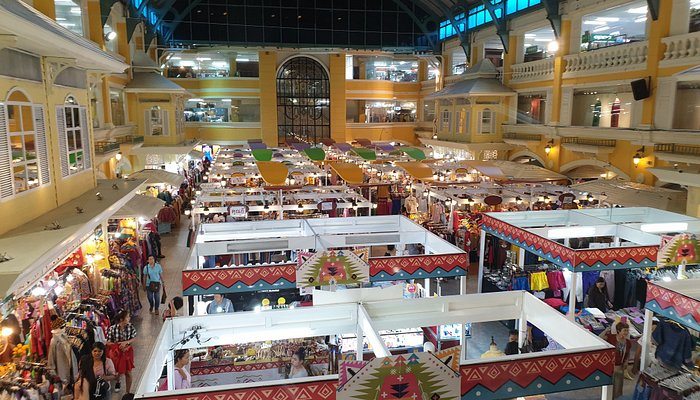
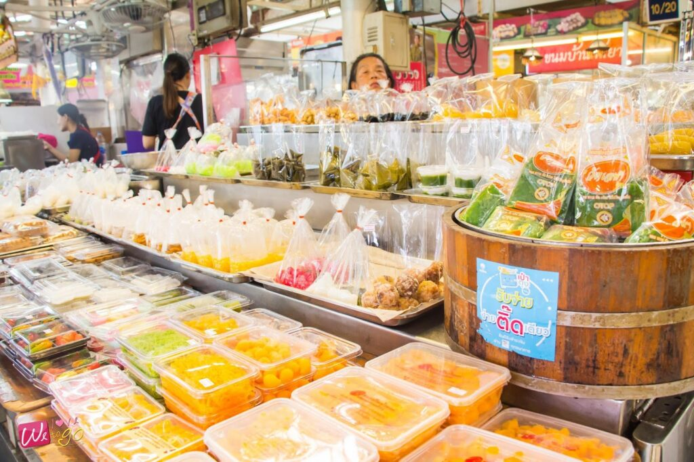
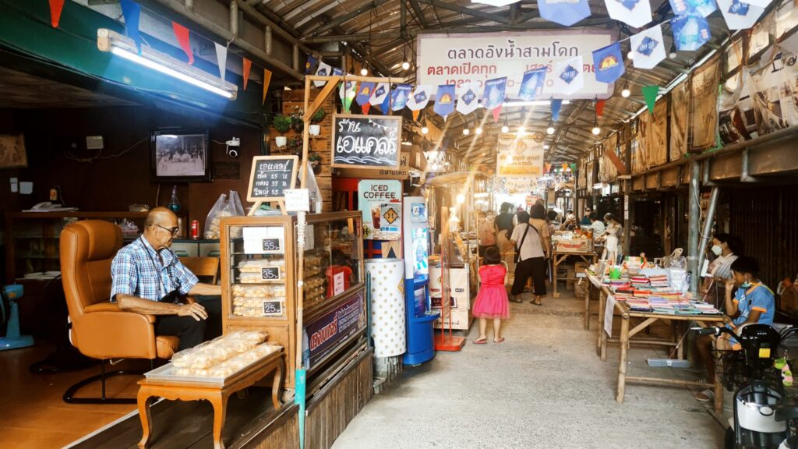
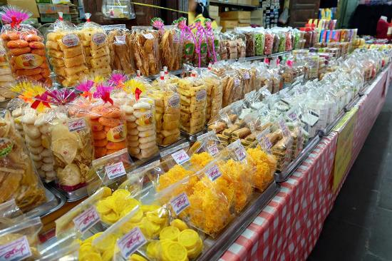

| ที่ | ชื่อสถานที่ | พื้นที่ | ขนมแนะนำ | วันเวลาเปิด-ปิด |
|---|---|---|---|---|
| 1 | ดิ โอลด์ สยาม พลาซ่า | เขตพระนคร (กทม.) | ทองเอก, จ่ามงกุฎ | ทุกวัน 10:00 - 19:00 น. |
| 2 | ตลาด อ.ต.ก. | เขตจตุจักร (กทม.) | ฝอยทอง, ทองหยิบ | ทุกวัน 06:00 - 18:00 น. |
| 3 | ตลาดอิงน้ำสามโคก | สามโคก (ปทุมธานี) | ขนมชั้น, เม็ดขนุน | ส-อา 08:00 - 16:00 น. |
| 4 | ตลาดไท (โซนขนม) | คลองหลวง (ปทุมธานี) | ซื้อส่งครบ 9 ชนิด | ทุกวัน 24 ชั่วโมง |

กรุงเทพมหานคร
ดิ โอลด์ สยาม พลาซ่า (ลานเฟื่องนคร)
ศูนย์รวมร้านขนมไทยเจ้าเก่าระดับตำนานที่ใหญ่ที่สุดในกรุงเทพฯ คุณจะพบกับขนมมงคลครบทั้ง 9 ชนิดที่ทำกันสดๆ กลิ่นหอมอบอวลไปทั่วห้าง เหมาะสำหรับหาซื้อไปจัดงานพิธีสำคัญหรือเป็นของขวัญผู้ใหญ่

กรุงเทพมหานคร
ตลาด อ.ต.ก. จตุจักร
แหล่งรวมขนมไทยเกรดพรีเมียม วัตถุดิบที่ใช้มีความประณีตสูงมาก โดยเฉพาะทองหยิบและฝอยทองที่มีความหวานหอมพอดี รสชาติคงที่ และมีการแพ็คบรรจุภัณฑ์ที่สวยงามทันสมัย

ปทุมธานี
ตลาดอิงน้ำสามโคก
ตลาดเก่าแก่ริมน้ำที่คงวิถีชีวิตดั้งเดิมไว้ มีขนมไทยโบราณที่หาทานยากจำหน่ายในราคาย่อมเยา ขนมมงคลที่นี่มักใช้สูตรกะทิสดหอมอบควันเทียนแบบชาวบ้านจริงๆ บรรยากาศอบอุ่นน่าเดินมากครับ

ปทุมธานี
ตลาดไท (โซนตลาดขนมและของแห้ง)
หากต้องการสั่งซื้อขนมมงคลจำนวนมากสำหรับงานเลี้ยงหรืองานทำบุญบ้าน ตลาดไทคือจุดหมายสำคัญ เพราะที่นี่เป็นศูนย์กลางการกระจายขนมไทยที่ใหญ่ที่สุด มีร้านค้าส่งที่ทำใหม่ทุกวันในราคาที่คุ้มค่าที่สุดในย่านปทุมธานี